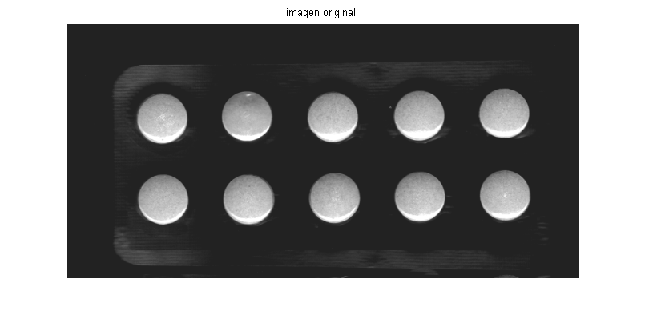
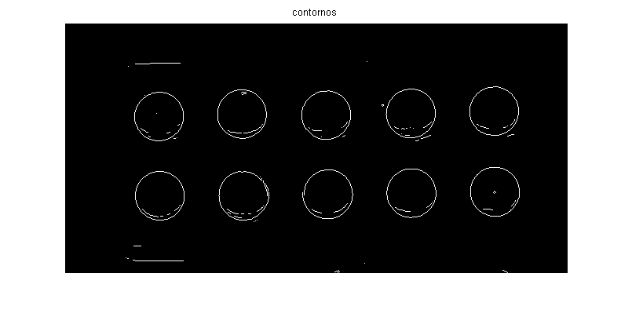
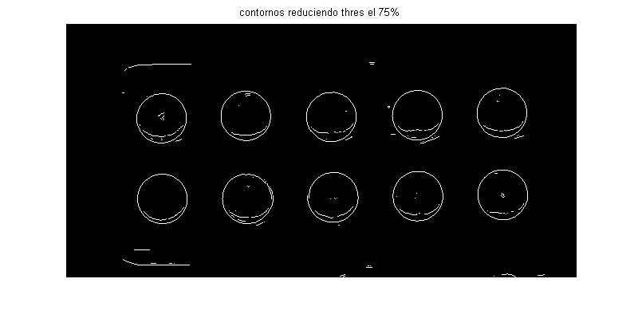
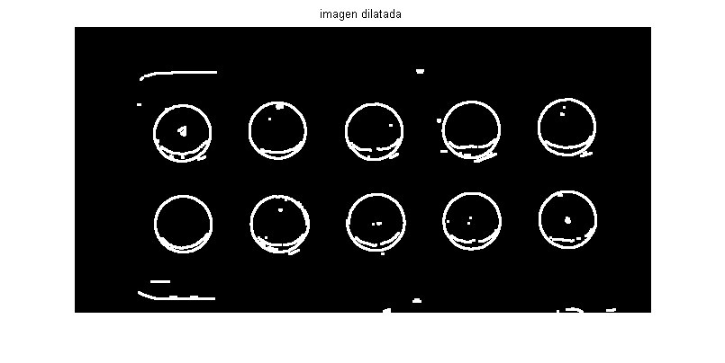
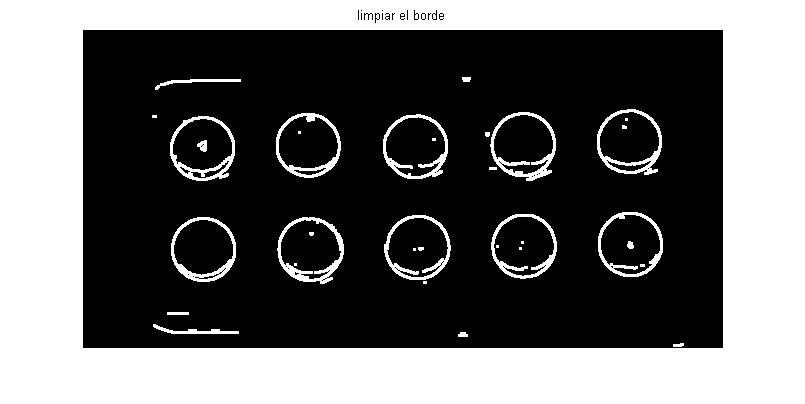
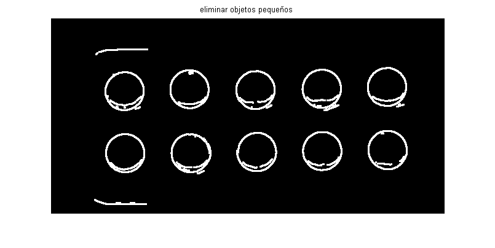
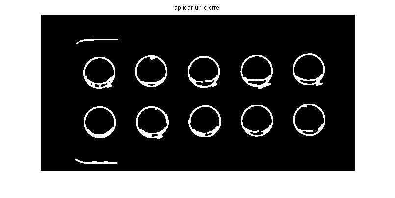
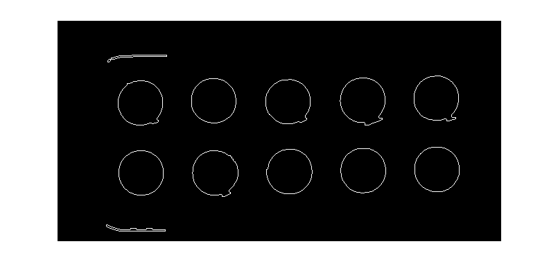
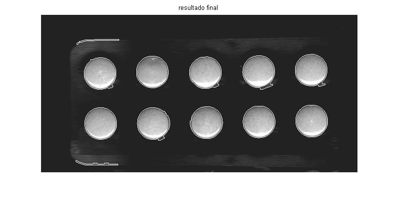

Contents
leer la imagen
I=imread('Tuto_1.bmp'); figure; imshow(I); title('imagen original')

Obtenemos el threshold en el calculo de los contornos
[Iedge, threshold] = edge(I, 'sobel'); figure; imshow(Iedge); title('contornos')

Reducimos el nivel de umbral y repetimos el calculo
Iedge2 = edge(I,'sobel', threshold * 0.75); figure; imshow(Iedge2); title('contornos reduciendo thres el 75%')

Definimos los elementos estructurales para limpiar la imagen
BW=Iedge2; % Una linea vertical de 3 pixels se90 = strel('line', 3, 90); % Una linea horizontal de 3 pixels se0 = strel('line', 3, 0);
Hacemos una dilaticion
BWdilate = imdilate(BW, [se90 se0]);
figure; imshow(BWdilate); title('imagen dilatada')

Limpiamos el borde de la imagen
BWnobord = imclearborder(BWdilate, 4);
figure; imshow(BWnobord); title('limpiar el borde')

Eliminamos elementos menores de 200 pixels
BWopen = bwareaopen(BWnobord,200);
figure; imshow(BWopen); title('eliminar objetos pequeños')

Aplicamos un cierre
BWclose = bwmorph(BWopen,'close'); figure; imshow(BWclose); title('aplicar un cierre')

Rellenamos los huecos
BWfill = imfill(BWclose, 'holes'); figure; imshow(BWclose); title('rellenar huecos');
Nos quedamos con el perimetro de los objetos
BWoutline = bwperim(BWfill);
imshow(BWoutline)
figure; imshow(BWoutline); title('quedarnos con el perimetro')

Sobre la imagen original superponemos el perimetro
segmentedCells = I;
segmentedCells(BWoutline) = 255;
figure; imshow(segmentedCells); title('resultado final')
